เป็นที่เชื่อกันว่าบรรพบุรุษชาวเอธิโอเปียของชาวโอโรโมในปัจจุบัน
เป็นคนกลุ่มแรกซึ่งรู้จักผลกระทบกระตุ้นประสาทของเมล็ดจากต้นกาแฟอย่างไรก็ตาม
ไม่มีหลักฐานโดยตรงซึ่งชี้ชัดว่าต้นกาแฟมีการปลูกอยู่ที่ใดในทวีปแอฟริกา
หรือผู้ใดในกลุ่มชาวพื้นเมืองซึ่งอาจใช้มันเป็นสารกระตุ้น
หรือแม้แต่รู้ถึงผลกระทบนั้น ก่อนหน้าคริสต์ศตวรรษที่ 17 เรื่องราวของ
คาลดี เด็กเลี้ยงแกะชาวเอธิโอเปียในราวคริสต์ศตวรรษที่ 9
ผู้ซึ่งค้นพบต้นกาแฟนั้น มิได้ปรากฏชื่อในงานเขียนจนกระทั่งถึง
คริสต์ศักราช 1671 หรืออาจเป็นเพียงเรื่องปลอมเท่านั้น จากเอธิโอเปีย
สันนิษฐานว่ากาแฟได้แพร่กระจายไปยังเยเมน
ที่ซึ่งมีการดื่มและผลิตขึ้นเป็นครั้งแรก จากนั้นได้แพร่ไปยังอียิปต์

ในขณะที่ หลักฐานซึ่งเชื่อถือได้สามารถสืบย้อนไปได้ไกลที่สุด
ถึงการดื่มกาแฟในวิหารซูฟีในม็อคค่าในเยเมน ที่ซึ่งในอาระเบีย
ได้มีการคั่วและชงเมล็ดกาแฟเป็นครั้งแรก
อันเป็นวิธีที่คล้ายคลึงกับการเตรียมกาแฟ ภายในคริสต์ศตวรรษที่ 16
กาแฟได้แพร่ขยายไปทั่วถึงตะวันออกกลาง เปอร์เซีย ตุรกี และแอฟริกาเหนือ
ในปี คริสต์ศักราช 1583 เลโอนาร์ด เราวอล์ฟ แพทย์ชาวเยอรมัน
ได้บรรยายถึงกาแฟหลังจากท่องเที่ยวในดินแดนตะวันออกใกล้เป็นเวลากว่าสิบปีไว้ว่าดังนี้:
เครื่องดื่มที่มีสีดำเหมือนหมึก ใช้รักษาโรคภัยได้หลายชนิด
โดยเฉพาะอย่างยิ่งโรคที่เกี่ยวกับท้อง ผู้ดื่มจะดื่มในตอนเช้า
มันเป็นการนำน้ำและผลไม้จากไม้พุ่มที่เรียกว่า bunnu
— เลโอนาร์ด เราวอล์ฟ ใน Reise in die Morgenländer
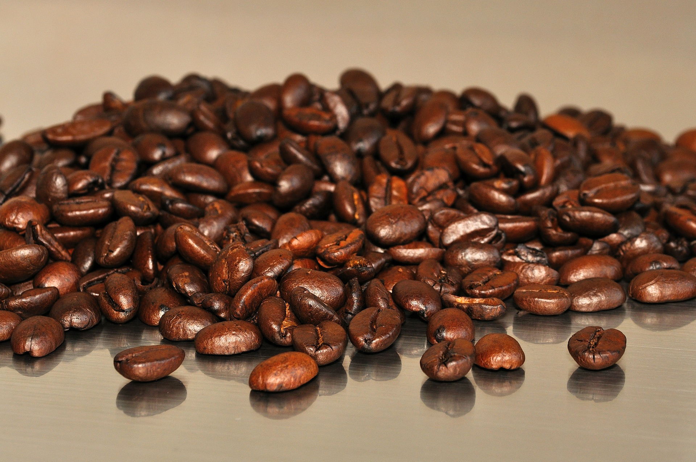
จากโลกมุสลิม กาแฟได้แพร่ขยายไปยังอิตาลี การค้าขายระหว่างเวนิซกับแอฟริกาเหนือ อียิปต์และตะวันออกกลางที่เจริญขึ้น ทำให้อิตาลีได้รับสินค้าใหม่ ๆ เข้ามาเป็นจำนวนมาก ซึ่งรวมไปถึงกาแฟด้วย หลังจากนั้น กาแฟก็ได้แพร่กระจายจากเมืองท่าเวนิซไปทั่วยุโรป กาแฟได้รับการยอมรับอย่างแพร่หลายมากขึ้น หลังจากสมเด็จพระสันตะปาปาคลีเมนต์ที่ 8 ลงความเห็นว่ามันเป็นเครื่องดื่มสำหรับคริสเตียน ในปี คริสต์ศักราช 1600 แม้ว่าจะมีการร้องเรียนให้ยกเลิก "เครื่องดื่มมุสลิม" ก็ตาม ร้านกาแฟแห่งแรกในทวีปยุโรปเปิดในอิตาลีในปี คริสต์ศักราช 1645 ชาว ดัตช์เป็นชนชาติแรกที่นำเข้ากาแฟเป็นจำนวนมาก และฝ่าฝืนข้อห้ามของอาหรับเกี่ยวกับการส่งออกพืชและเมล็ดที่ยังไม่ได้คั่ว เมื่อ Pieter van den Broeck ลักลอบนำเข้ากาแฟจากเอเดนไปยังยุโรปในปี คริสต์ศักราช 1616ในภายหลังชาวดัตช์ยังได้นำไปปลูกในเกาะชวาและซีลอน ซึ่งผลผลิตกาแฟจากเกาะชวาสามารถส่งไปยังเนเธอร์แลนด์ได้ในปี คริสต์ศักราช 1711 และด้วยความพยายามของบริษัทอินเดียตะวันออกของอังกฤษ ทำให้กาแฟได้รับความนิยมในประเทศอังกฤษเช่นเดียวกัน กาแฟเข้าสู่ประเทศฝรั่งเศส ในปี คริสต์ศักราช 1657 และเข้าสู่ออสเตรียและโปแลนด์ หลังจากยุทธการเวียนนา เมื่อปี คริสต์ศักราช 1683 ซึ่งทหารสามารถยึดเสบียงของทหารออตโตมานเติร์กที่พ่ายแพ้ในการรบครั้งนั้น
หลังจากนั้น กาแฟได้เข้าสู่ทวีปอเมริกาเหนือในช่วงยุคอาณานิคม แต่ว่าไม่ได้รับความนิยมมากเท่ากับในทวีปยุโรป อย่างไรก็ตาม ในช่วงสงครามปฏิวัติอเมริกัน ปริมาณความต้องการกาแฟได้เพิ่มสูงขึ้นอย่างรวดเร็วจนพวกพ่อค้ากักตุนสินค้าเอาไว้และปั่นราคาขึ้นอย่างกะทันหัน ซึ่งบางส่วนเป็นผลมาจากการที่พ่อค้าชาวอังกฤษไม่สามารถนำเข้าชาได้มากนักหลังจากสงครามปี 1812 ในช่วงที่อังกฤษงดการนำเข้าชาเป็นการชั่วคราว ชาวอเมริกันจึงหันมาดื่มกาแฟแทน และมีปริมาณความต้องการสูงมากในช่วงสงครามกลางเมืองอเมริกัน ไปพร้อม ๆ กับการพัฒนาของเทคโนโลยีการต้มเหล้าทำให้กาแฟกลายเป็นสินค้ายอดนิยมในสหรัฐอเมริกาจนถึงปัจจุบัน แต่ในอังกฤษ ปริมาณการบริโภคกาแฟกลับลดลง และชาวอังกฤษหันไปบริโภคชาแทนระหว่างคริสต์ศตวรรษที่ 18 เครื่องดื่มชาเป็นเครื่องดื่มซึ่งเตรียมขึ้นได้ง่ายกว่า และหาซื้อได้ในราคาถูกจากการยึดครองอินเดียและอุตสาหกรรมชาในอินเดียของอังกฤษ
มอคค่าโมคา (Cafe Mocha)
มอคค่าโมคา (อังกฤษ: Cafe Mocha)
เป็นเครื่องดื่มกาแฟที่คล้ายกับกาแฟลาเต้คือมีเอสเปรสโซ 1/3 ส่วน
และนมร้อน 2/3 ส่วน
แต่แตกต่างกันที่โมคาจะมีส่วนผสมของช็อกโกแลตด้วย
โดยมักจะใส่ในรูปของน้ำเชื่อมช็อกโกแลต
เสิร์ฟได้ทั้งแบบร้อนและแบบเย็นใส่น้ำแข็ง มักมีวิปครีมปิดหน้า

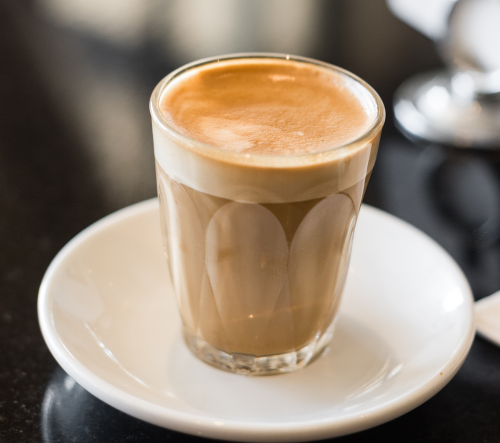
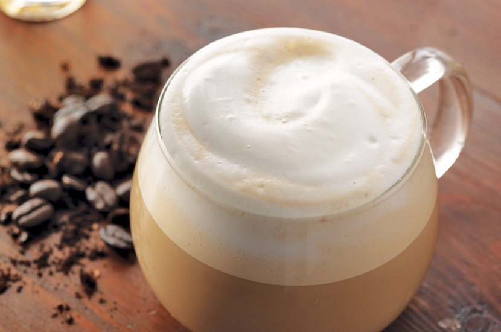
โมคา (Mocha)
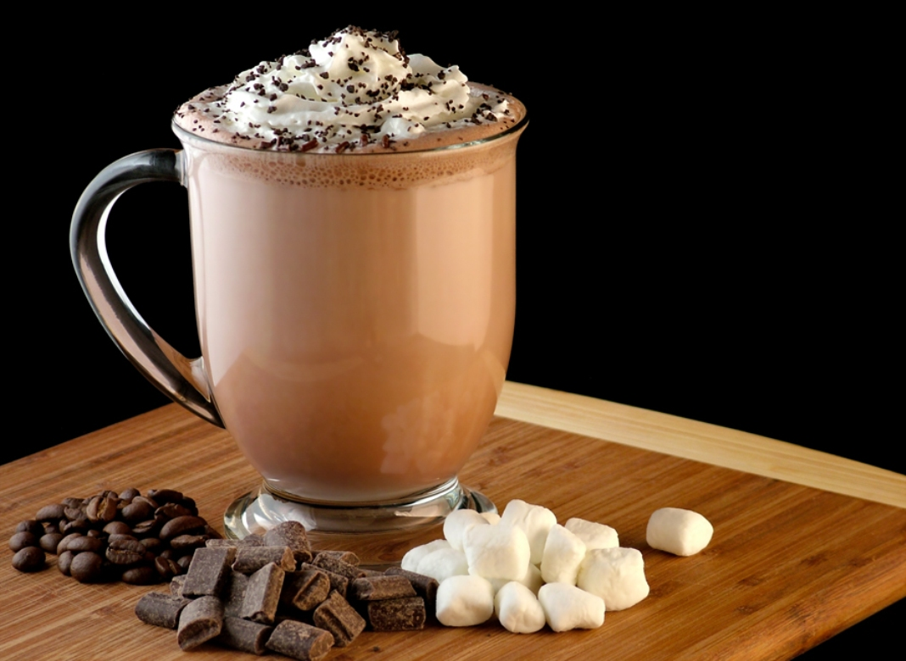
โมคา อาจหมายถึงกาแฟอะแรบิกาชนิดหนึ่ง
ซึ่งปลูกอยู่บริเวณเมืองท่าโมคาในประเทศเยเมน
กาแฟโมคามีสีและกลิ่นคล้ายช็อกโกแลต
(แม้ว่าจะไม่มีส่วนประกอบของช็อกโกแลตในโมคาเลยก็ตาม)
อันเป็นเอกลักษณ์ที่ทำให้กาแฟโมคาเป็นที่รู้จักอย่างแพร่หลาย
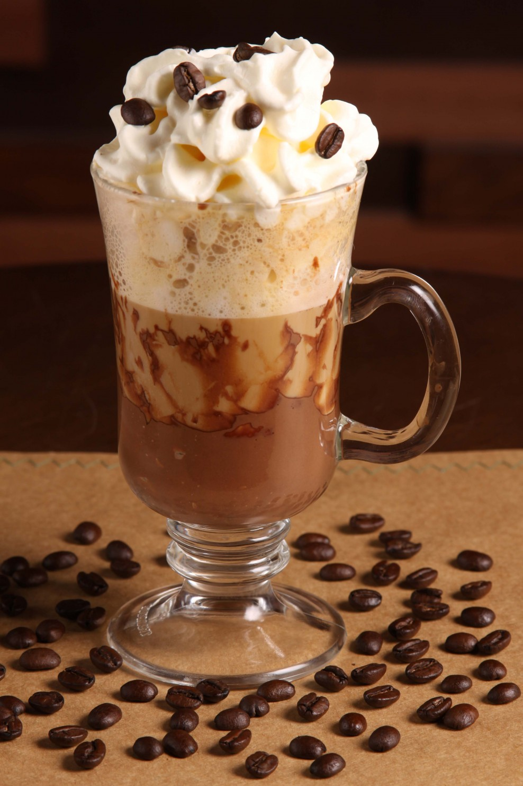
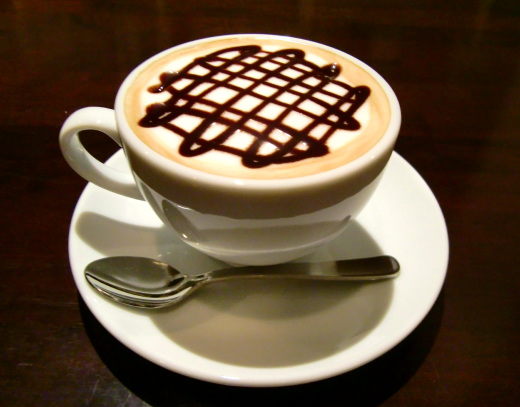
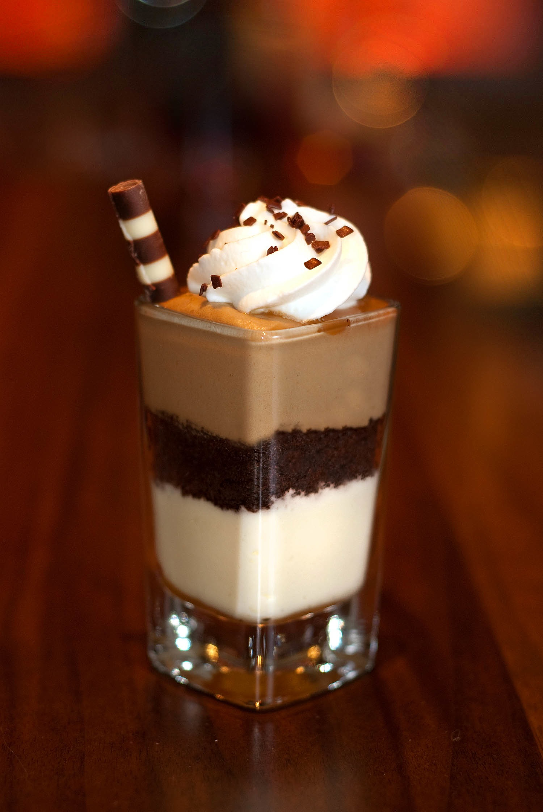
อเมริกาโน (Americano)
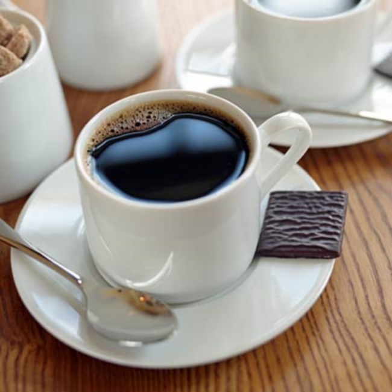
อเมริกาโน (อิตาลี: americano) คือเครื่องดื่มกาแฟชนิดหนึ่ง
มีวิธีการชงโดยเติมน้ำร้อนผสมลงไปในเอสเปรสโซ
การเจือจางเอสเปรสโซซึ่งเป็นกาแฟเข้มข้นด้วยน้ำร้อน
ทำให้อเมริกาโนมีความแก่พอ ๆ กับกาแฟธรรมดา
แต่มีกลิ่นและรสชาติที่เข้มที่มาจากเอสเปรสโซ
อเมริกาโนเหมาะสำหรับผู้ที่ชื่นชอบกาแฟดำ
แต่ไม่แก่และหนักถึงขั้นเอสเปรสโซ
คอกาแฟส่วนใหญ่นิยมดื่มอเมริกาโนโดยไม่ปรุงด้วยนมหรือน้ำตาล
เพื่อดื่มด่ำกับรสชาติกาแฟซึ่งแตกต่างจากกาแฟธรรมดา
สำหรับที่มาของชื่อ "อเมริกาโน" ซึ่งหมายถึง "แบบอเมริกัน" นั้น
ว่ากันว่าเอสเปรสโซล้วน ๆ เข้มข้นเกินไปสำหรับคอกาแฟชาวอเมริกัน
จึงมีการเสิร์ฟกาแฟเอสเปรสโซที่ทำให้เจือจางด้วยน้ำร้อนแทน
แม้ว่าชื่อกาแฟจะหมายถึงกาแฟแบบอย่างอเมริกัน
แต่อเมริกาโนก็มิได้เป็นกาแฟที่ชาวอเมริกันนิยมดื่มจนกระทั่งยุครุ่งเรืองของร้านกาแฟสตาร์บัคส์ในปี
พ.ศ. 2533
แต่ถึงกระนั้นอเมริกาโนก็ไม่จัดเป็นกาแฟที่ได้รับความนิยมมากนัก
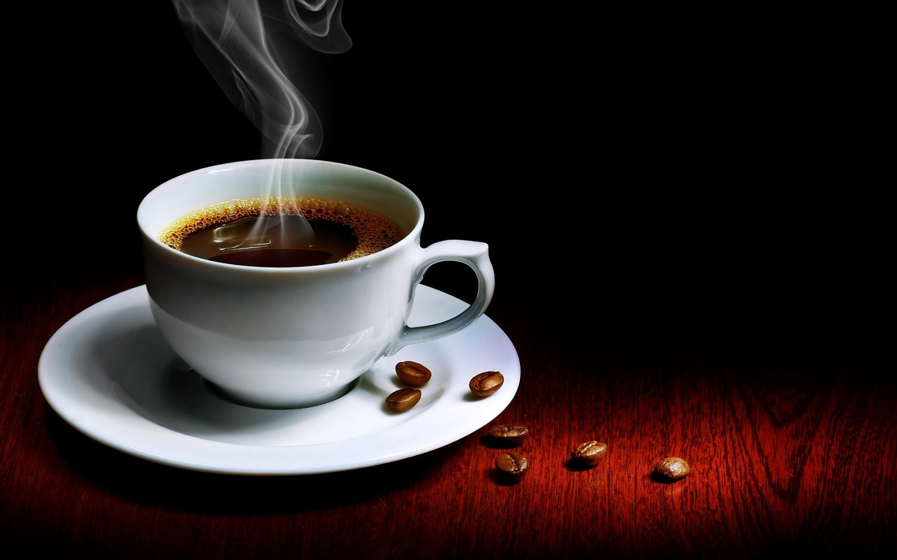

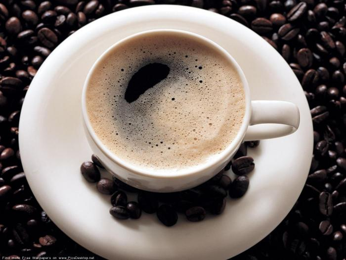


 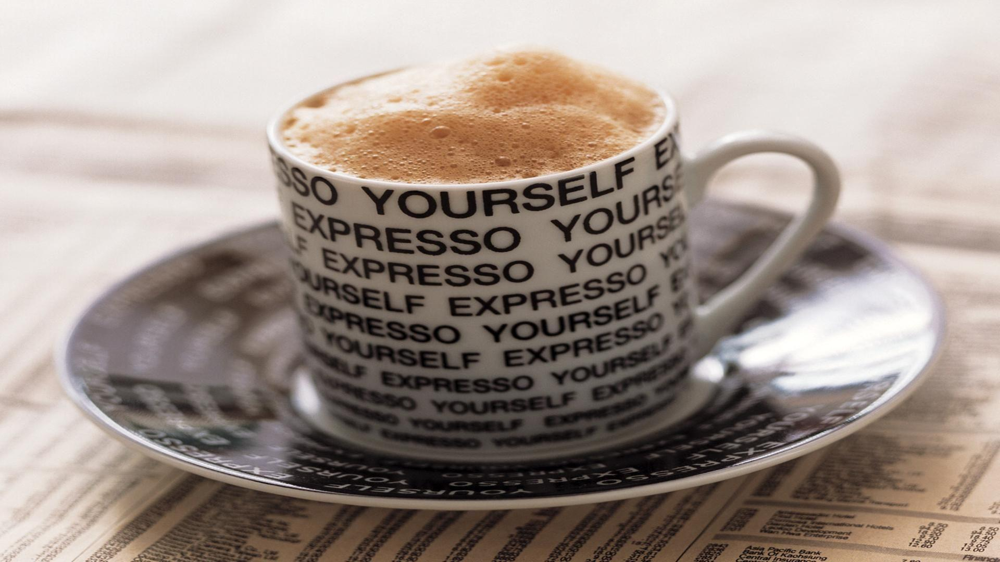
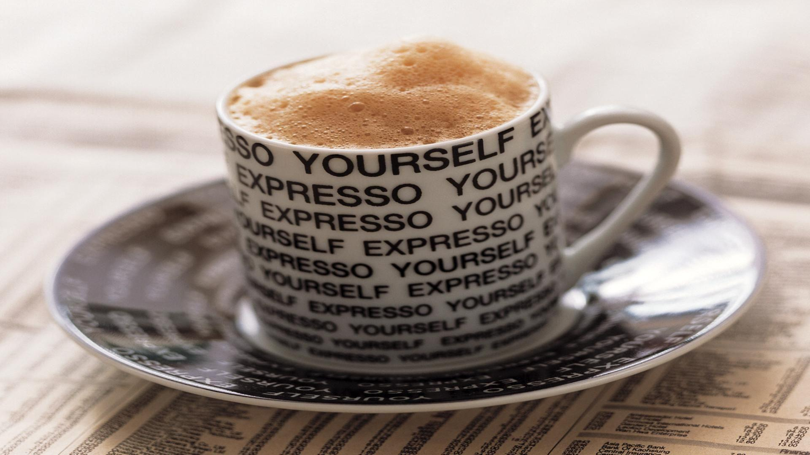